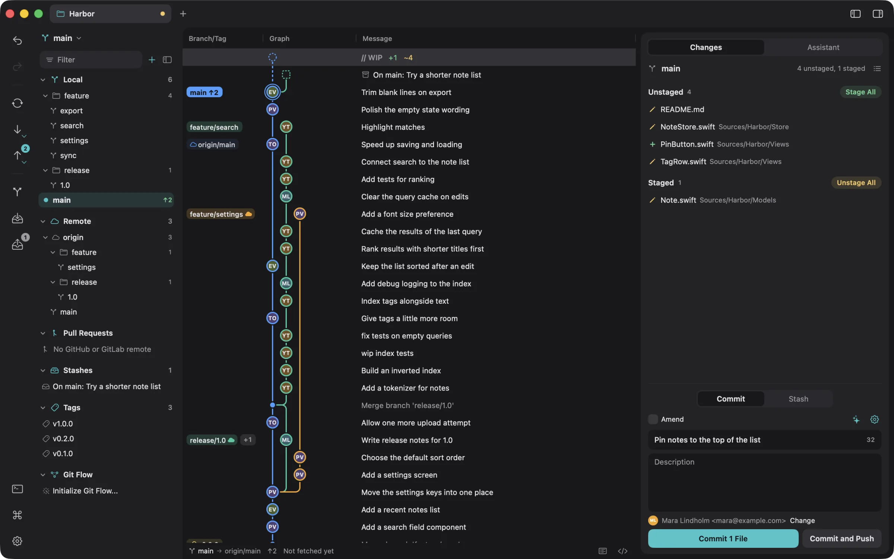

GuideStart
Get started
Set up Branchlane with the Git, SSH keys and remotes you already have.
Branchlane uses the git that is already on your Mac. If macOS asks to install the command line developer tools the first time, accept it. Branchlane has no account to create.

- Toolbar. Undo, fetch, pull, push, branch and stash. The number on Push is how many commits you have not sent yet.
- Left panel. Local and remote branches, pull requests, stashes, tags and Git Flow. ⌘J hides it.
- Commit graph. Each branch keeps a straight line. The
// WIProw at the top is what you have not committed yet. - Right panel. Changes, the commit box and the assistant. Click a commit in the graph to see what it changed. ⌘K hides it.
First setup#
- Open a repository. Choose Add Repository (⌘O) and pick a folder, or Clone Repository (⇧⌘O) and paste a URL.
- Allow your Git identity. The App Sandbox keeps Branchlane out of your home folder until you say so. In Settings > Git & SSH, choose your
.gitconfigonce so commits use your name and email. - Allow SSH keys if you use key files. Keys loaded in
ssh-agentalready work. To use key files and~/.ssh/config, choose your.sshfolder in the same place. - Sign in to HTTPS remotes when asked. Branchlane asks for a username and token the first time a remote needs one, and keeps it in your Keychain only if you choose to remember it.
Check from Terminal first#
These are the same Git and SSH settings the app uses. Skip what you already have.
Terminal
# Command line developer tools and Git
xcode-select --install
git --version
# The name and email that go into your commits
git config --global user.name "Alex Kim"
git config --global user.email "alex@example.com"
# Load your key into ssh-agent and test GitHub
ssh-add --apple-use-keychain ~/.ssh/id_ed25519
ssh -T git@github.comIf the last command ends with You've successfully authenticated, your SSH remotes work in Branchlane as they are.